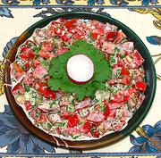

|
Red Bell Pepper SaladGeorgia - Tkbili Tsitsakis Salati | ||||
| Makes: Effort: Sched: DoAhead: |
3 # ** 1 hr Yes |
This is a really delicious salad, and works well for parties. Nearly all the time is cutting, so if you make a half recipe, it will take little more than half the time. | |||
|
1-1/4 1-1/4 5 3 1/2 2 ------ 1/2 1/4 3/4 ------ |
# # oz oz c T --- t t c --- |
Tomatoes Bell Pepper, red Scallions Dill Pickle Cilantro (1) Dill -- Dressing Salt Chili Powder (2) Mayonnaise (3) --------- |
If you make this salad much ahead, refrigerate, and stir in the dressing items just before serving. Make - (1 hr - 20 min work)
|